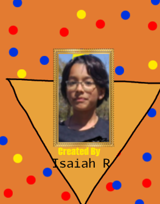

Go BackGamesLog in MAIN CREDITS

Isaiah Made the Band and Many other things (Not this website)
He likes Hazbin Hotel And Watches Clarence
Fun Fact! This band was made with a Wimpy kid Do it yourself book.
He's the Second Band Member and Best Friend Of
Isaiah.Also Watches Clarence and made this Website!
SMALLER CREDITS
Untitled walten files mod 4 the music!
Scratch for Game engine!
Squiglytuff! for Shop song (scratch)
SPECIAL THANKS
Jeff kidney for starting the band
"Without ur Do it yourself book this would have never existed"